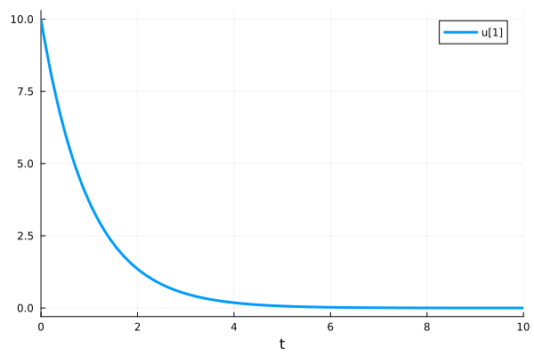
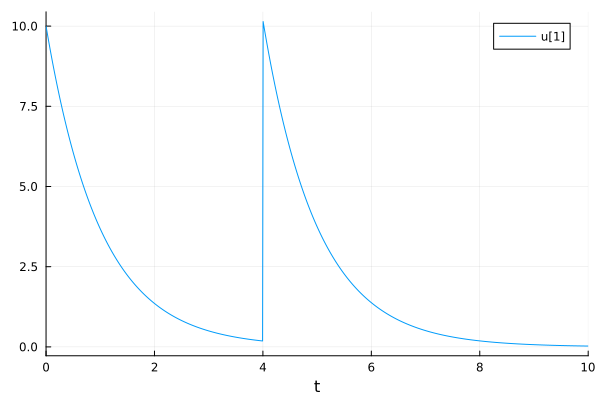
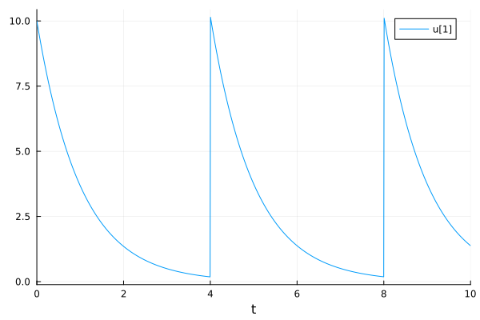
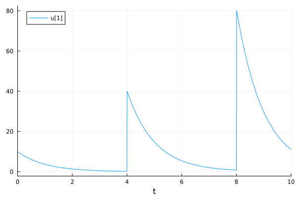
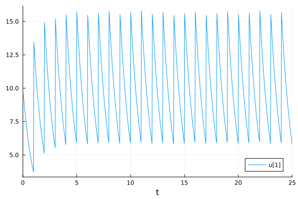
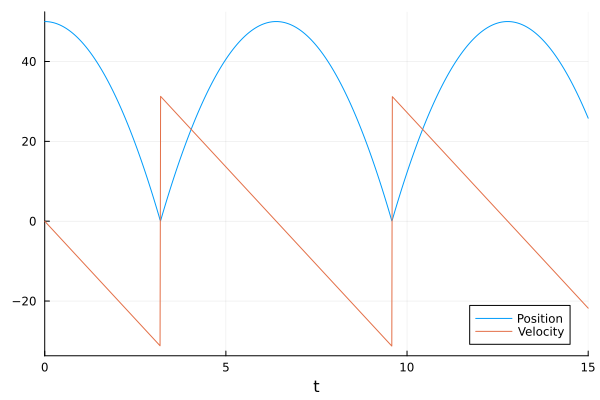
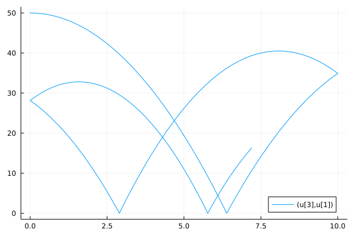

Callbacks and Events#
Docs:
https://docs.sciml.ai/DiffEqDocs/stable/features/callback_functions/
https://tutorials.sciml.ai/html/introduction/04-callbacks_and_events.html
Types#
ContinuousCallback: applied when a given continuous condition function hits zero. SciML solvers are able to interpolate the integration step to meet the condition.DiscreteCallback: applied when its condition function is true.CallbackSet(cb1, cb2, ...): Multiple callbacks can be chained together to form aCallbackSet.VectorContinuousCallback: an array ofContinuousCallbacks.
How to#
After you define a callback, send it to the solve() function:
sol = solve(prob, alg, callback=cb)
DiscreteCallback : Interventions at Preset Times#
The drug concentration in the blood follows exponential decay.
using OrdinaryDiffEq, DiffEqCallbacks
using Plots
Exponential decay model
function dosing!(du, u, p, t)
du[1] = -u[1]
end
u0 = [10.0]
tspan = (0.0, 10.0)
prob = ODEProblem(dosing!, u0, tspan)
sol = solve(prob, Tsit5())
plot(sol, lw=3)

Add a dose of 10 at t = 4. You may need to force the solver to stop at t==4 by using tstops=[4.0] to properly apply the callback.
condition(u, t, integrator) = t == 4
affect!(integrator) = integrator.u[1] += 10
cb = DiscreteCallback(condition, affect!)
sol = solve(prob, Tsit5(), callback=cb, tstops=[4.0])
plot(sol)

Applying multiple doses.
dosetimes = [4.0, 8.0]
condition(u, t, integrator) = t ∈ dosetimes
affect!(integrator) = integrator.u[1] += 10
cb = DiscreteCallback(condition, affect!)
sol = solve(prob, Tsit5(), callback=cb, tstops=dosetimes)
plot(sol)

Conditional dosing. Note that a dose was not given at t=6 because the concentration is not less than 1.
dosetimes = [4.0, 6.0, 8.0]
condition(u, t, integrator) = t ∈ dosetimes && (u[1] < 1.0)
affect!(integrator) = integrator.u[1] += 10integrator.t
cb = DiscreteCallback(condition, affect!)
sol = solve(prob, Tsit5(), callback=cb, tstops=dosetimes)
plot(sol)

PresetTimeCallback#
PresetTimeCallback(tstops, affect!) takes an array of times and an affect! function to apply. The solver will stop at tstops to ensure callbacks are applied.
dosetimes = [4.0, 8.0]
affect!(integrator) = integrator.u[1] += 10
cb = PresetTimeCallback(dosetimes, affect!)
sol = solve(prob, Tsit5(), callback=cb)
plot(sol)
Periodic callback#
PeriodicCallback is a special case of DiscreteCallback, used when a function should be called periodically in terms of integration time (as opposed to wall time).
prob = ODEProblem(dosing!, u0, (0.0, 25.0))
affect!(integrator) = integrator.u[1] += 10
cb = PeriodicCallback(affect!, 1.0)
sol = solve(prob, Tsit5(), callback=cb)
plot(sol)

Continuous Callback#
bouncing Ball example#
using OrdinaryDiffEq, DiffEqCallbacks
using Plots
function ball!(du, u, p, t)
du[1] = u[2]
du[2] = -p
end
# When the ball touches the ground
# Telling when event_f(u,t) == 0
function condition(u, t, integrator)
u[1]
end
function affect!(integrator)
integrator.u[2] = -integrator.u[2]
end
cb = ContinuousCallback(condition, affect!)
u0 = [50.0, 0.0]
tspan = (0.0, 15.0)
p = 9.8
prob = ODEProblem(ball!, u0, tspan, p)
sol = solve(prob, Tsit5(), callback=cb)
plot(sol, label=["Position" "Velocity"])

Vector Continuous Callback#
You can group multiple callbacks together into a vector. In this example, we will simulate bouncing ball with multiple walls.
using OrdinaryDiffEq, DiffEqCallbacks
using Plots
function ball_2d!(du, u, p, t)
du[1] = u[2] ## x_pos
du[2] = -p ## x_vel
du[3] = u[4] ## y_pos
du[4] = 0.0 ## y_vel
end
ball_2d! (generic function with 1 method)
Vector conditions
function condition(out, u, t, integrator) ## Event when event_f(u,t) == 0
out[1] = u[1]
out[2] = (u[3] - 10.0)u[3]
end
condition (generic function with 2 methods)
Vector affects
function affect!(integrator, idx)
if idx == 1
integrator.u[2] = -0.9integrator.u[2]
elseif idx == 2
integrator.u[4] = -0.9integrator.u[4]
end
end
cb = VectorContinuousCallback(condition, affect!, 2)
u0 = [50.0, 0.0, 0.0, 2.0]
tspan = (0.0, 15.0)
p = 9.8
prob = ODEProblem(ball_2d!, u0, tspan, p)
sol = solve(prob, Tsit5(), callback=cb, dt=1e-3, adaptive=false)
plot(sol, idxs=(3, 1))

Other Callbacks#
https://docs.sciml.ai/DiffEqCallbacks/stable/
ManifoldProjection(g): keepg(u) = 0for energy conservation.AutoAbstol(): automatically adapt the absolute tolerance.PositiveDomain(): enforce non-negative solution. The system should also be defined outside the positive domain. There is also a more general versionGeneralDomain().StepsizeLimiter((u,p,t) -> maxtimestep): restrict maximal allowed time step.FunctionCallingCallback((u, t, int) -> func_content; funcat=[t1, t2, ...]): call a function at the time points (t1, t2, …) of interest.SavingCallback((u, t, int) -> data_to_be_saved, dataprototype): call a function and saves the result.IterativeCallback(time_choice(int) -> t2, user_affect!): apply an effect at the time of the next callback.
This notebook was generated using Literate.jl.